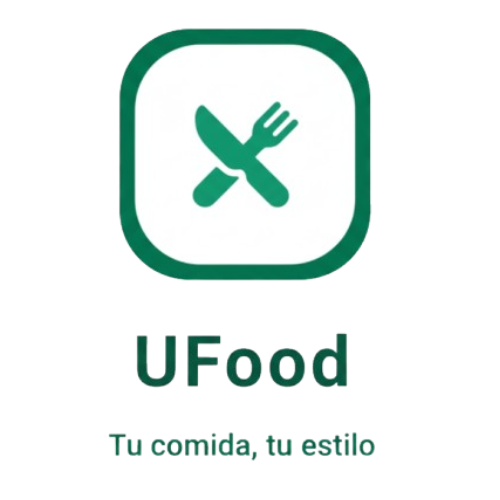

UFood
Tu comida, tu estilo
Bienvenido a UFood ("la App", "nuestra plataforma", "el servicio"). Al descargar, instalar, registrarte o utilizar la aplicación móvil UFood, aceptas estos Términos y Condiciones en su totalidad. Si no estás de acuerdo con alguno de estos términos, por favor NO uses la App.
IMPORTANTE: Estos términos constituyen un acuerdo legal vinculante entre tú (el "Usuario") y UFood. Te recomendamos leerlos detenidamente antes de usar nuestros servicios.
1. Información General del Servicio
1.1 Definición del Servicio
UFood es una plataforma móvil de comercio electrónico que:
- Permite a compradores buscar, consultar y contactar vendedores de productos alimenticios locales
- Permite a vendedores publicar, gestionar y promocionar sus productos
- Facilita la comunicación directa entre compradores y vendedores mediante integración con WhatsApp
- Actúa como intermediaria tecnológica entre usuarios y vendedores
1.2 Naturaleza del Servicio
UFood es un marketplace (mercado digital):
- NO somos fabricantes ni vendedores directos de productos
- NO realizamos entregas físicas de productos
- NO procesamos pagos dentro de la aplicación en esta versión
- Facilitamos el contacto entre compradores y vendedores para que completen transacciones de forma independiente
1.3 Desarrolladores
UFood es desarrollada y mantenida por:
- Juan Mateo Hernández De Luna
- Norma Sayuri Gutiérrez Cruz
- Brian Emmanuel Flores Hernández
- Aaron Yosef Chávez Martínez
Contacto: ufoodmabn@gmail.com
2. Requisitos y Registro de Usuario
2.1 Elegibilidad
Para usar UFood debes:
- Tener al menos 18 años de edad
- Tener capacidad legal para celebrar contratos vinculantes
- Proporcionar información verdadera, precisa y completa durante el registro
- No haber sido previamente suspendido o expulsado de la plataforma
2.2 Tipos de Cuenta
UFood ofrece dos tipos de cuentas:
A) Cuenta de Comprador (Cliente/Vendedor)
- Buscar productos y vendedores
- Contactar vendedores vía WhatsApp
- Gestionar perfil personal
- Acceder a historial de búsquedas
- Todas las funciones de comprador
- Publicar y gestionar productos
- Recibir consultas de compradores
- Administrar inventario y precios
B) Como administrador
Acceso al panel de administracion de usuarios
2.3 Proceso de Registro
Para crear una cuenta debes proporcionar:
| Campo |
Requisitos |
| Nombre completo |
Mínimo 4 caracteres, máximo 20. Solo letras, números y guiones bajos. Sin espacios ni caracteres especiales. |
| Correo electrónico |
Formato válido (usuario@dominio.com). Debe ser único en la plataforma. |
| Teléfono |
Exactamente 10 dígitos numéricos. |
| Contraseña |
• Mínimo 8 caracteres
• Al menos 1 letra mayúscula
• Al menos 1 letra minúscula
• Al menos 1 número
|
2.4 Seguridad de la Cuenta
- Eres único responsable de mantener la confidencialidad de tu contraseña
- Las contraseñas se almacenan de forma encriptada
- Las sesiones expiran después de 1 hora de inactividad
- Toda comunicación se realiza mediante HTTPS (conexión segura)
- Debes notificarnos inmediatamente si sospechas de uso no autorizado de tu cuenta
⚠️ IMPORTANTE: Eres responsable de todas las actividades que ocurran bajo tu cuenta. UFood no será responsable por pérdidas derivadas del uso no autorizado de tu cuenta si no nos notificaste oportunamente.
3. Uso Correcto de la Plataforma
3.1 Conducta Permitida
Como usuario de UFood puedes:
- Buscar productos legítimos de alimentos
- Contactar vendedores para consultas sobre productos
- Publicar productos legales (si eres vendedor)
- Intercambiar información de contacto con vendedores
- Compartir experiencias positivas de compra
3.2 Conductas Prohibidas
Queda ESTRICTAMENTE PROHIBIDO:
Está prohibido usar UFood para:
- Actividades Ilegales:
- Vender productos prohibidos o ilegales
- Cometer fraude o estafa
- Lavar dinero o financiar actividades ilícitas
- Violar leyes de salud pública o sanitarias
- Suplantación y Engaño:
- Hacerse pasar por otra persona o entidad
- Publicar información falsa o engañosa
- Usar identidades falsas
- Crear múltiples cuentas para evadir restricciones
- Contenido Inapropiado:
- Subir contenido ofensivo, difamatorio o discriminatorio
- Publicar contenido sexual, violento o que incite al odio
- Compartir información que infrinja derechos de terceros
- Spam o publicidad no autorizada
- Manipulación Técnica:
- Intentar acceder a cuentas de otros usuarios
- Manipular o alterar el funcionamiento de la App
- Usar bots, scripts o automatización no autorizada
- Realizar ingeniería inversa del código
- Introducir virus, malware o código malicioso
- Abuso del Sistema:
- Hacer un uso excesivo que afecte el rendimiento
- Extraer datos masivamente (scraping)
- Interferir con el servicio de otros usuarios
3.3 Consecuencias del Incumplimiento
Si incumples estos términos, podemos:
- Emitir advertencias
- Suspender temporalmente tu cuenta
- Desactivar permanentemente tu cuenta (cambio a estado inactivo)
- Eliminar contenido infractor
- Reportar actividades ilegales a las autoridades
- Emprender acciones legales para recuperar daños
4. Responsabilidades de los Vendedores
4.1 Publicación de Productos
Si eres vendedor, te comprometes a:
- Publicar solo productos que tengas disponibles para venta
- Proporcionar descripciones precisas y veraces
- Usar imágenes reales de tus productos
- Establecer precios justos y claros
- Mantener actualizado el stock disponible
- Cumplir con todas las regulaciones sanitarias aplicables
4.2 Gestión de Productos
- Puedes agregar, editar o eliminar productos en cualquier momento
- Las imágenes deben comprimirse automáticamente (máximo 5MB cada una)
- Debes indicar claramente cuando un producto esté agotado
- Los productos pueden guardarse como borrador o publicados
4.3 Comunicación con Compradores
Como vendedor debes:
- Responder consultas de forma oportuna y profesional
- Proporcionar información clara sobre disponibilidad y precios
- Coordinar entregas o puntos de encuentro de forma segura
- Mantener un trato respetuoso con los compradores
4.4 Calidad y Seguridad Alimentaria
RESPONSABILIDAD LEGAL DEL VENDEDOR:
- Eres totalmente responsable de la calidad, seguridad e higiene de tus productos
- Debes cumplir con todas las regulaciones sanitarias locales, estatales y federales
- Debes contar con permisos y licencias requeridos para vender alimentos
- UFood NO verifica la calidad de los productos ni las credenciales de los vendedores
- UFood NO asume responsabilidad por problemas de salud derivados del consumo de productos
5. Responsabilidades de los Compradores
5.1 Verificación de Productos
Como comprador, eres responsable de:
- Verificar la información del vendedor antes de contactarlo
- Hacer preguntas sobre el producto antes de comprarlo
- Inspeccionar los productos al momento de recibirlos
- Verificar que el vendedor tenga las licencias sanitarias necesarias
5.2 Transacciones Seguras
- Coordina encuentros en lugares públicos y seguros
- No compartas información financiera sensible por WhatsApp
- Si algo parece sospechoso, repórtalo inmediatamente
- Guarda evidencia de tus transacciones (capturas, mensajes)
5.3 Reporte de Problemas
Si experimentas problemas con un vendedor:
- Intenta resolverlo primero directamente con el vendedor
- Repórtalo a UFood a través de ufoodmabn@gmail.com
- Proporciona evidencia (capturas de pantalla, fotos, etc.)
- Si es un problema de salud, contacta a las autoridades sanitarias
6. Comunicación y Mensajería (WhatsApp)
6.1 Integración con WhatsApp
UFood facilita la comunicación mediante redirección a WhatsApp:
- Al presionar "Contactar", se abre WhatsApp automáticamente
- La conversación ocurre fuera de la aplicación UFood
- UFood no almacena ni tiene acceso al contenido de tus conversaciones en WhatsApp
- Sujeto a los términos y privacidad de WhatsApp/Meta
6.2 Contenido de Mensajes
Recomendaciones para mensajería segura:
- Sé claro y específico en tus consultas
- No compartas información bancaria completa
- Verifica la identidad del vendedor
- Guarda evidencia de acuerdos importantes
- Mantén un tono respetuoso y profesional
7. Pagos y Transacciones
7.1 Procesamiento de Pagos (Versión Actual)
En la versión actual de UFood:
- Los pagos se realizan fuera de la plataforma
- Compradores y vendedores acuerdan el método de pago directamente
- UFood NO procesa, almacena ni tiene acceso a información de pagos
- UFood NO cobra comisiones por transacciones en esta versión
7.2 Métodos de Pago Externos (Futuro)
En futuras versiones, podríamos integrar:
- PayPal
- MercadoPago
- Otros proveedores de pago certificados
Cuando esto ocurra:
- Los pagos serán procesados por terceros verificados
- UFood NO almacenará números completos de tarjetas ni códigos CVV
- Se te notificarán las comisiones aplicables
- Se actualizarán estos términos con las nuevas condiciones
7.3 Responsabilidad en Transacciones
UFood NO es responsable por:
- Disputas sobre pagos realizados fuera de la plataforma
- Fraudes o estafas en transacciones directas entre usuarios
- Errores en transferencias o pagos
- Productos no entregados o defectuosos
- Reembolsos o devoluciones (se manejan entre comprador y vendedor)
⚠️ IMPORTANTE: Las transacciones son bajo tu propio riesgo. Te recomendamos usar métodos de pago seguros y verificables, y mantener evidencia de todas las transacciones.
8. Gestión de Cuentas por Administradores
8.1 Usuario Administrador
UFood cuenta con administradores designados que tienen las siguientes funciones:
- Supervisar el cumplimiento de estos Términos y Condiciones
- Investigar reportes de usuarios
- Moderar contenido inapropiado
- Gestionar solicitudes de eliminación de cuenta
- Tomar medidas disciplinarias cuando sea necesario
- Mantener la seguridad y calidad de la plataforma
8.2 Suspensión y Desactivación de Cuentas
Un administrador puede desactivar tu cuenta en los siguientes casos:
- Incumplimiento de estos Términos y Condiciones
- Actividad fraudulenta o sospechosa
- Múltiples reportes de otros usuarios
- Publicación de contenido ilegal o inapropiado
- Suplantación de identidad
- Uso de múltiples cuentas para evadir restricciones
- Comportamiento abusivo hacia otros usuarios
8.3 Proceso de Eliminación de Cuenta
Sistema de Doble Estado y Eliminación Automática:
Estado 1: Cuenta Activa
- Tu cuenta funciona normalmente
- Tienes acceso completo a todas las funciones
- Tus productos son visibles (si eres vendedor)
Estado 2: Cuenta Inactiva (Desactivada)
- Tu cuenta cambia a estado "inactivo"
- Pierdes acceso inmediato a la aplicación
- Tus productos dejan de ser visibles
- Tus datos quedan en "período de retención de 30 días"
Eliminación Permanente Automática (Después de 30 días)
- Un proceso automático (Job/Tarea programada) ejecuta la eliminación
- Se eliminan PERMANENTEMENTE:
- Todos tus datos personales
- Historial de búsquedas y actividad
- Productos publicados (si eres vendedor)
- Conversaciones y mensajes internos
- Configuraciones y preferencias
- Solo se conservan datos agregados y anónimos para estadísticas
- Esta eliminación es IRREVERSIBLE
8.4 Solicitud Voluntaria de Eliminación
Puedes solicitar la eliminación de tu cuenta en cualquier momento:
- Envía un correo a: ufoodmabn@gmail.com
- Asunto: "Solicitud de Eliminación de Cuenta"
- Incluye tu nombre completo y correo registrado
- Tu cuenta pasará a estado inactivo inmediatamente
- Tienes 30 días para cambiar de opinión
- Después de 30 días, la eliminación será automática y permanente
8.5 Reactivación Durante el Período de 30 Días
- Si cambiaste de opinión, puedes solicitar reactivación
- Envía un correo a ufoodmabn@gmail.com dentro de los 30 días
- Tu cuenta será revisada por un administrador
- Si la desactivación fue voluntaria, generalmente se reactivará
- Si fue por incumplimiento, se evaluará caso por caso
8.6 Apelaciones
Si consideras que tu cuenta fue desactivada injustamente:
- Tienes derecho a apelar la decisión
- Envía tu apelación a ufoodmabn@gmail.com
- Incluye evidencia que respalde tu caso
- Revisaremos tu caso en un plazo de 10 días hábiles